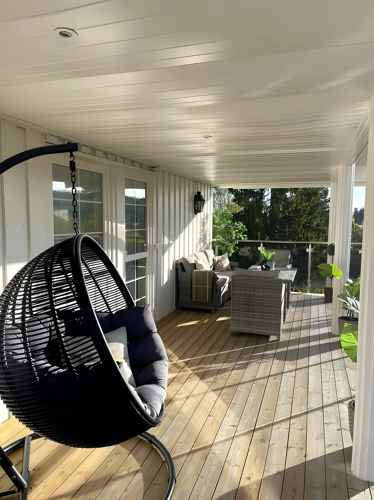
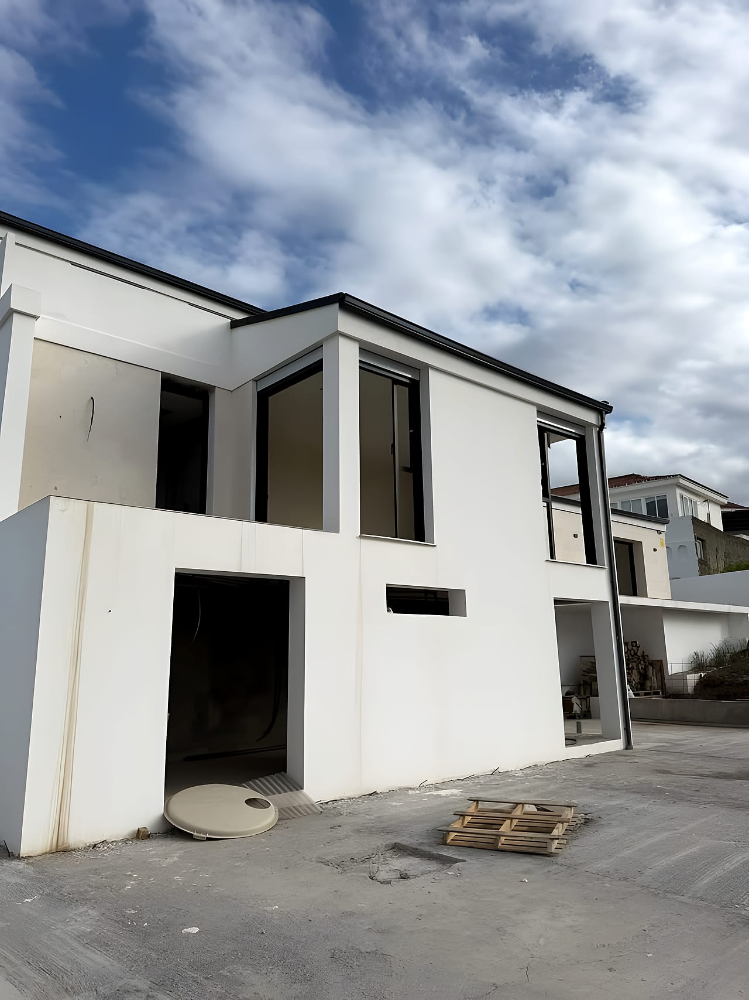
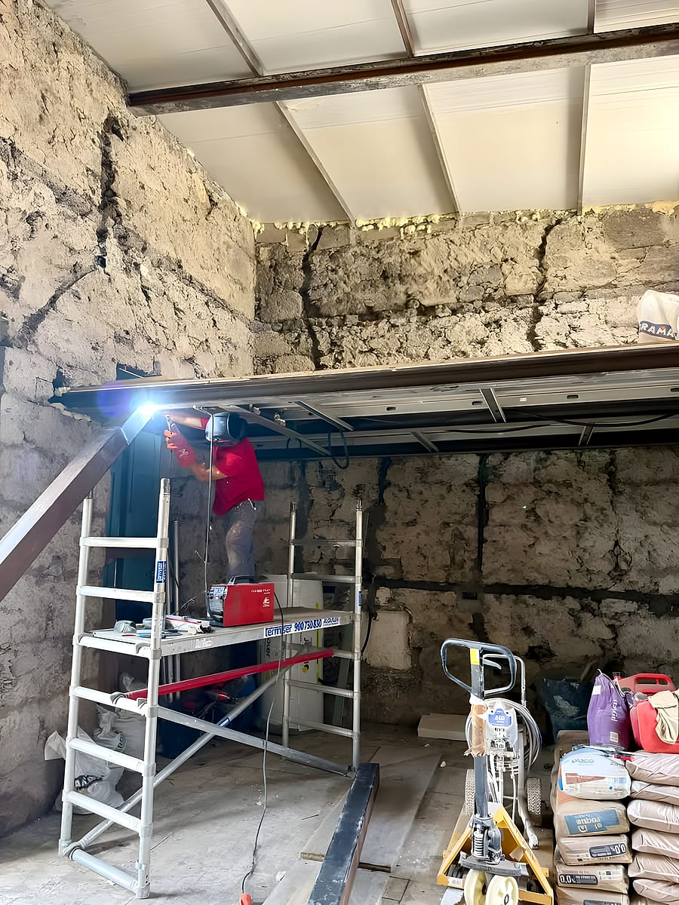

01Especialidades
Construcción de grandes dimensiones
Edificios y obras de gran volumen, desde la estructura hasta el último acabado. Planificación rigurosa, equipos coordinados y cada fase bajo control.



Construcción y reformas · Gran Canaria
Calidad en cada detalle. Compromiso en cada resultado.
01Acabados e Inversiones J.G.M., S.L.
En Acabados e Inversiones J.G.M., S.L. desarrollamos proyectos de construcción, reformas y rehabilitación, combinando precisión, solidez y atención al detalle.
Ofrecemos un servicio cercano y personalizado, adaptado a las necesidades de cada cliente, con atención profesional en español, noruego e inglés.
02Obras
Toca una obra para ver todas sus fotos.

Nuestro local
Lo estamos terminando de reformar. Muy pronto podrás pasar a vernos y contarnos tu proyecto en persona.
03Antes y después
Elige una obra y desliza sobre la foto.


Apartamento frente al mar


Cocina completa Arguineguín · 2026


Fachada de madera Noruega


Salón Arguineguín · 2026


Entrada de lujo


Baño


Terraza Arguineguín · 2024


Buhardilla


Muebles empotrados
04Especialidades
01Especialidades
Edificios y obras de gran volumen, desde la estructura hasta el último acabado. Planificación rigurosa, equipos coordinados y cada fase bajo control.

02Especialidades
Viviendas, ampliaciones y obra nueva a medida. La misma exigencia en cada metro, sea cual sea el tamaño del proyecto.

03Especialidades
Tabiques, techos y trasdosados para proyectos grandes y pequeños: superficies lisas, buen aislamiento y soluciones a medida para cada espacio.

04Especialidades
Estructuras metálicas, barandillas y piezas a medida, con soldaduras limpias, resistentes y hechas para durar.
También hacemos

05Nuestra trayectoria
Contamos con una amplia trayectoria en el sector de la construcción y las reformas, desarrollando proyectos de obra nueva, rehabilitación y renovación integral de viviendas, edificios y establecimientos hoteleros.
Nuestra experiencia abarca desde la transformación de baños y cocinas hasta la renovación de pavimentos, fachadas y espacios interiores, siempre bajo una metodología de trabajo basada en la precisión, el cuidado de los acabados, el orden y la limpieza.
Apostamos por una comunicación transparente y un trato personalizado, acompañando al cliente en cada etapa del proyecto.
06Opiniones
«Estoy encantadísima con el resultado.»
«Det er jeg kjempefornøyd med.»
Elisabeth, clienta noruega en Gran Canaria (2024)
07Instagram
Cada semana subimos cómo avanzan nuestros proyectos.
08Contacto
Responde a tres preguntas y te abrimos WhatsApp con el mensaje escrito. Puedes escribirnos en español, noruego o inglés.